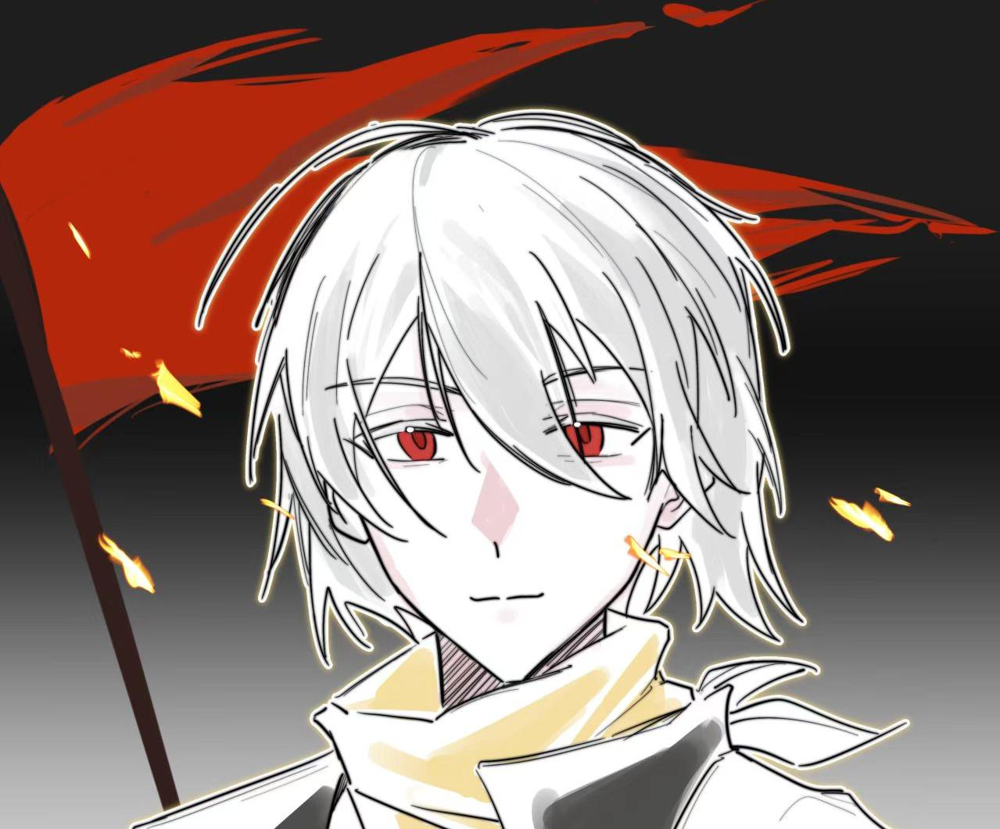

剧情回顾
永冻纪元的希望火种
拉莫迪亚，一个被冰雪和变异怪物覆盖的世界。在这里，自然的威胁从未消散，寒冷鬼魅般如影随形，辐射更是悄无声息地侵蚀着一切。为了生存，人们发展出了违背人性的科学。
你们，背景各异的冒险者，一无所有地在实验室睁开了眼睛。怀揣着各自的目的与信念，在这片危机四伏的世界里，你们将如何应对各方势力的博弈，又能否在寒冷与辐射的双重威胁下寻得希望的曙光？去影响、去改变、去拯救这个世界吧，冒险者们！。
纽弗什滕堡
深埋于冰雪和岩层下的地下城市
主要章节
序章：逃离实验室
冒险者们一无所有地从实验室中醒来，面对如此窘境，冒险者要如何在残酷的拉莫迪亚生存下去，同时弄清身上奇怪纹身的秘密？

第一章：纽弗什滕堡篇
逃离实验室后，冒险者开始在滕堡艰难求生。熔火、越穹结社、旧纽弗什滕堡……冒险者掀开了世界秘密的一角。
第二章：卢登多夫篇
熔火向卢登多夫宣战？！冒险者匆匆赶往卢登多夫。菌黄水晶、锚点、灰烬机关……世界的秘密逐渐向冒险者敞开了怀抱。
第三章：锚点篇
从利奥纳多·马西伦的遗物中，冒险者们了解到拉莫迪亚十个锚点的秘密。为了拯救拉莫迪亚，冒险者再度踏上冰原，与命运开展新的斗争。
第四章：大决战
告别白幕，冒险者们却得知卢登多夫正在进行大屠杀？！毫无头绪下，冒险者只得决定先杀了博士。只要博士死了，一切都会好起来的，吗？